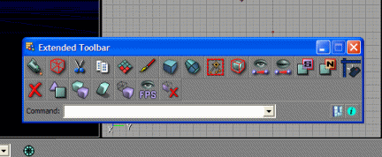

ExtendedToolbar
Extended Toolbar is an utility for UnrealEd created by Jan "eGo" Urbansky. Version 1.2 is available. |

|
About
This tool contains a complete new toolbox with Custom Toolbox Buttons for UnrealEd and is directly communicating with the UnrealEd console.
Note
Create new toolbox button sets with Toolbar Creator v2.11
Supported Unreal Editor versions
(tested games see list below)
UnrealEd 1
- DeusEx
- Rune
- The Wheel of Time
- Undying (UndEd)
- Unreal
- Unreal: Return to Na Pali
UnrealEd 2
- Mobile Forces
- Undying (UndEd2)
- Unreal Tournament (UT99)
UnrealEd 3
- America's Army: Special Forces
- Brothers in Arms: Road to Hill 30
- Pariah
- Rainbow Six 3: Raven Shield
- Tribes Vengeance
- Unreal II
- Unreal II - XMP
- UnrealEngine2 Runtime
- UT2003
- UT2004
- XIII
UnrealEd 4
- RoboBlitz
Downloads
[Extended Toolbar v1.2] (build date 14.02.2007)
Discussion
Graphik: You may wish to make note of which version(s) of UnrealEd are supported.
Copperman: Anychance of having this great idea for unrealed2 (UT99)?
Jan: Please download updated version. UEd2 support is integrated now.
Copperman: Thanks Jan